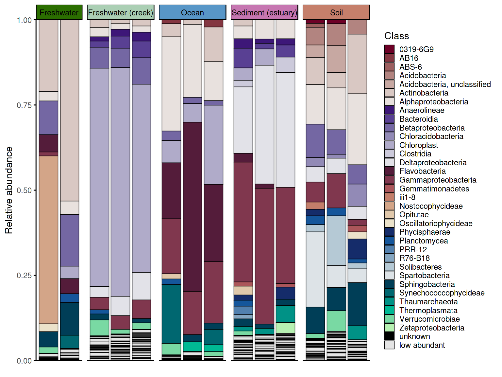
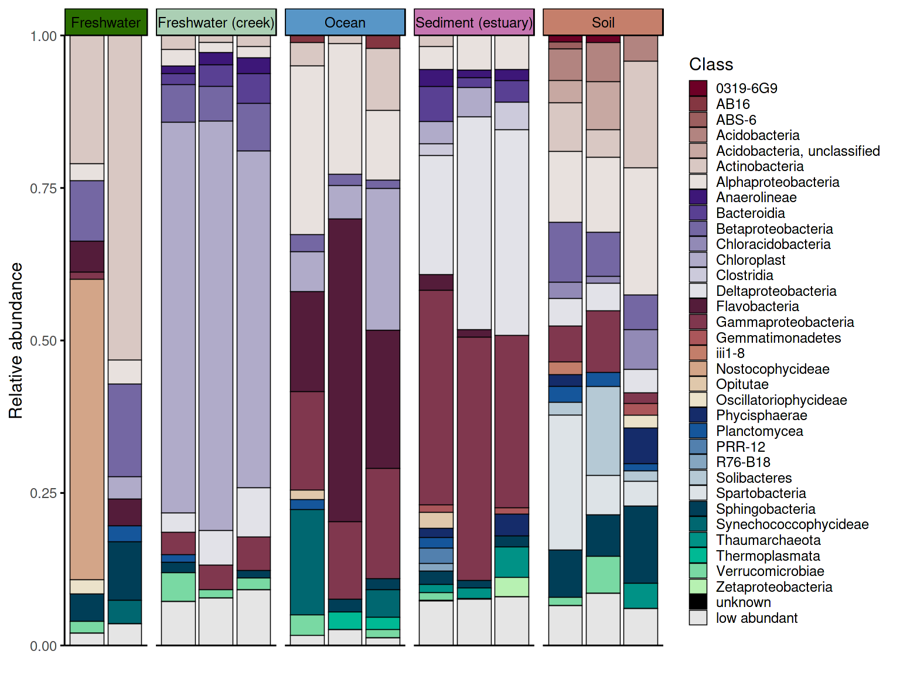
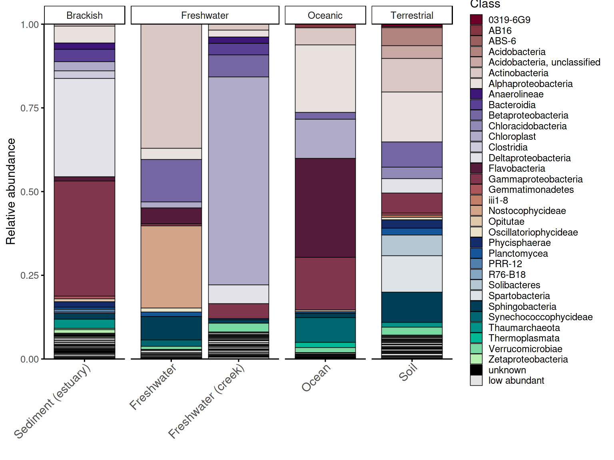
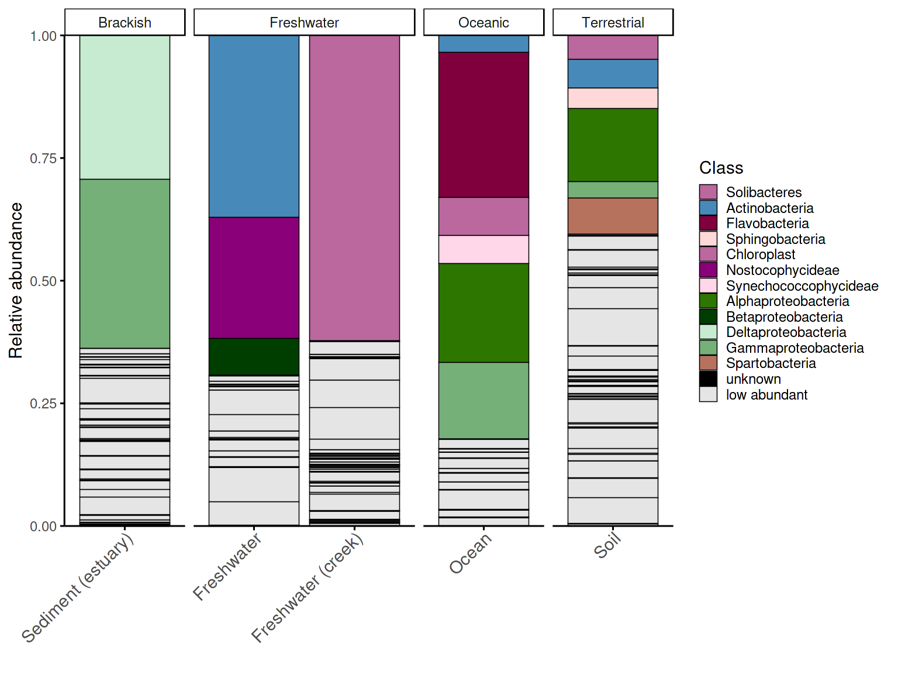
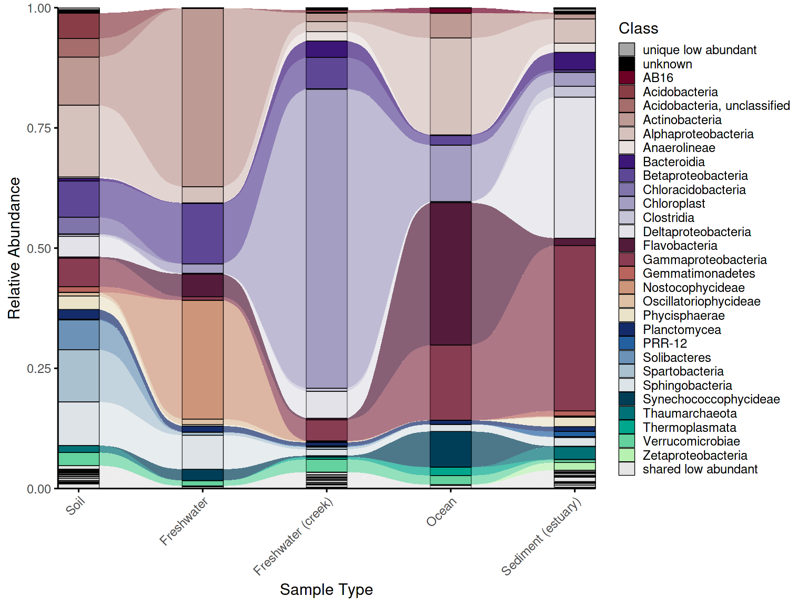
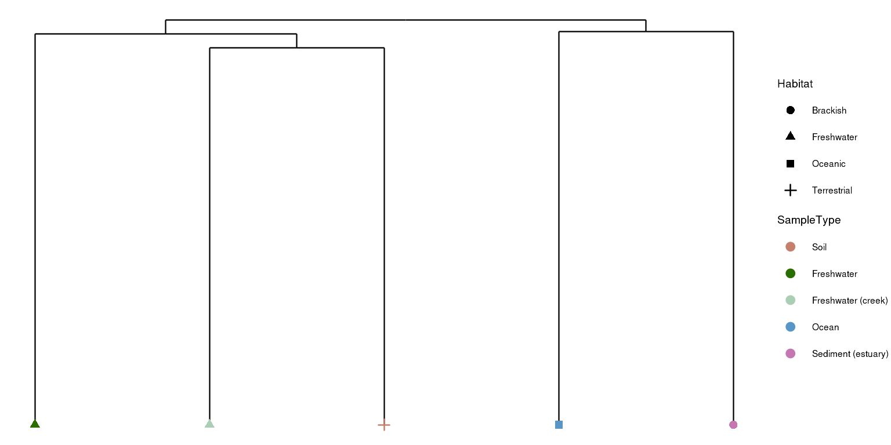
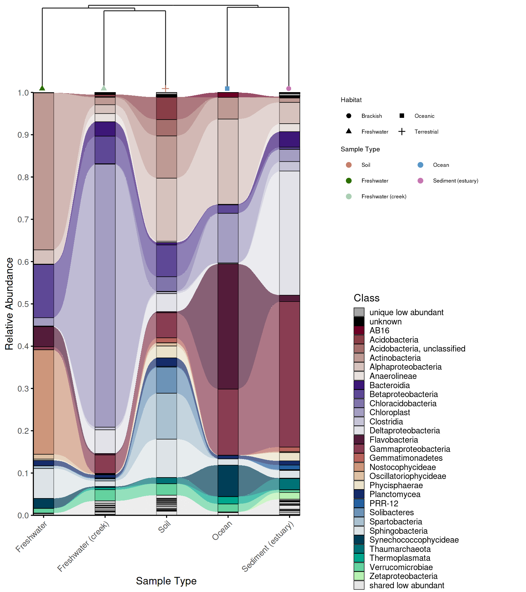
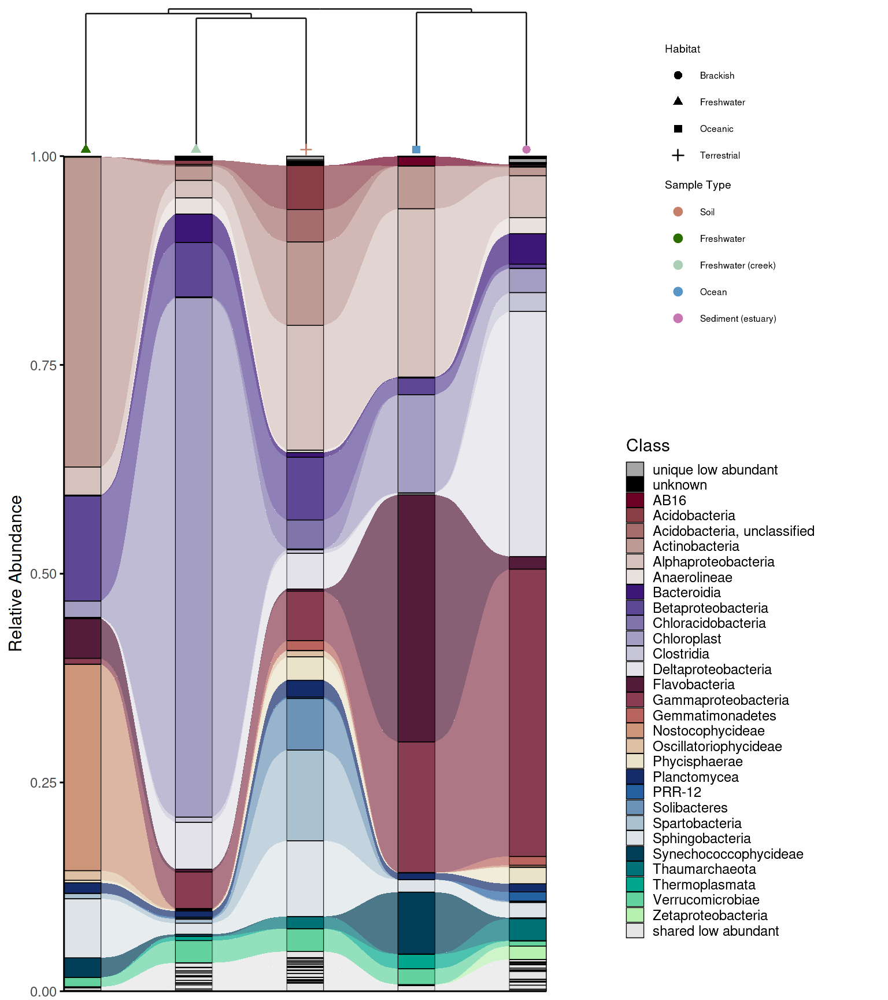
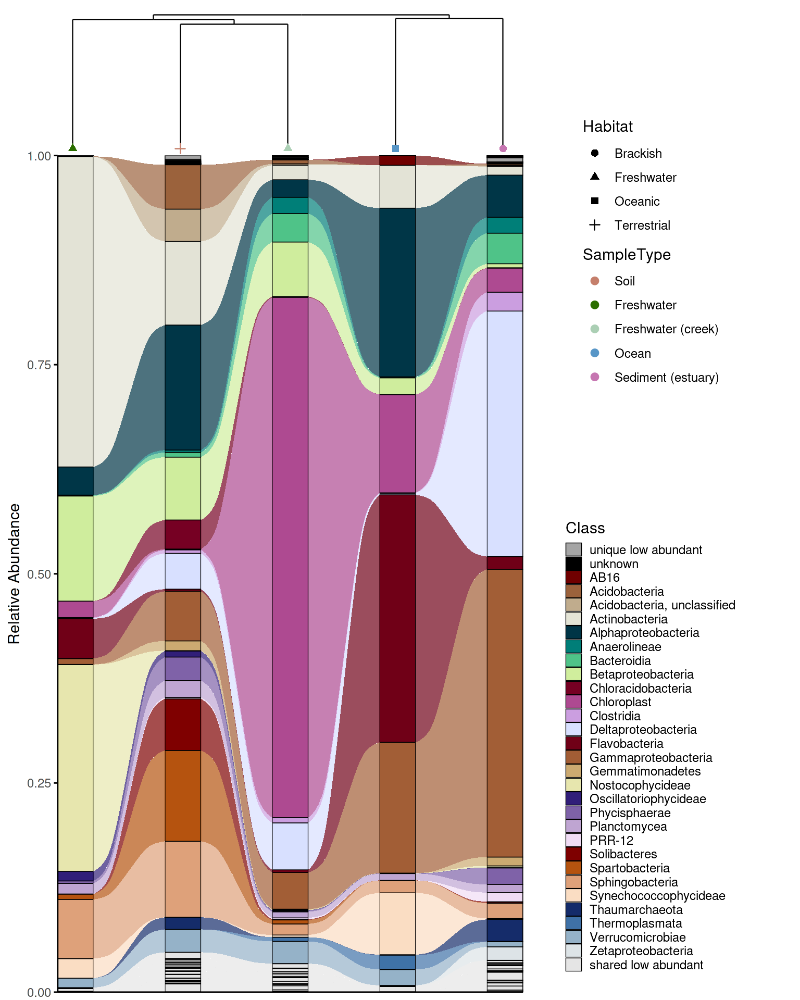

Overview
phyloPal is designed around a common bottleneck in microbiome data visualization: the gap between having processed abundance data and producing figures that are both publication-ready and honest about compositional structure. The package provides a connected workflow — taxonomy cleaning, data aggregation, color palette generation, and plotting — where each step feeds naturally into the next. Palettes are aware of taxonomic hierarchy, alluvial plots are aware of which taxa are shared versus unique across groups, and combined dendrogram-alluvial figures keep beta diversity and composition aligned in the same panel.
The examples in this vignette use a subset of the
GlobalPatterns dataset from the phyloseq
package, covering five habitat types: Terrestrial, Oceanic, Freshwater,
Brackish, and Freshwater creek.
Installation
phyloPal is available from GitHub. The devtools package
is required for installation:
# install.packages("devtools")
devtools::install_github("mwslawinska/phyloPal")Example data
phyloPal ships with a subset of the GlobalPatterns
dataset from the phyloseq package, filtered to five habitat
types.
data(example_microbiome)
data(em_metadata)
data(em_otu)
# What does it look like?
glimpse(example_microbiome) # long-format ASV table with RA column
#> Rows: 269,024
#> Columns: 14
#> $ SampleID <chr> "CL3", "CC1", "SV1", "LMEpi24M", "SLEpi20M", "AQC1cm", "AQ…
#> $ OTU <chr> "549322", "549322", "549322", "549322", "549322", "549322"…
#> $ Counts <dbl> 0, 0, 0, 0, 1, 27, 100, 130, 1, 0, 0, 0, 0, 0, 0, 0, 0, 0,…
#> $ Depth <dbl> 864077, 1135457, 697509, 2117592, 1217312, 1167748, 235718…
#> $ RA <dbl> 0.000000e+00, 0.000000e+00, 0.000000e+00, 0.000000e+00, 8.…
#> $ SampleType <fct> Soil, Soil, Soil, Freshwater, Freshwater, Freshwater (cree…
#> $ Habitat <chr> "Terrestrial", "Terrestrial", "Terrestrial", "Freshwater",…
#> $ Description <fct> "Calhoun South Carolina Pine soil, pH 4.9", "Cedar Creek M…
#> $ Kingdom <chr> "Archaea", "Archaea", "Archaea", "Archaea", "Archaea", "Ar…
#> $ Phylum <chr> "Crenarchaeota", "Crenarchaeota", "Crenarchaeota", "Crenar…
#> $ Class <chr> "Thermoprotei", "Thermoprotei", "Thermoprotei", "Thermopro…
#> $ Order <chr> NA, NA, NA, NA, NA, NA, NA, NA, NA, NA, NA, NA, NA, NA, NA…
#> $ Family <chr> NA, NA, NA, NA, NA, NA, NA, NA, NA, NA, NA, NA, NA, NA, NA…
#> $ Genus <chr> NA, NA, NA, NA, NA, NA, NA, NA, NA, NA, NA, NA, NA, NA, NA…
glimpse(em_metadata) # sample metadata
#> Rows: 14
#> Columns: 4
#> $ SampleID <fct> CL3, CC1, SV1, LMEpi24M, SLEpi20M, AQC1cm, AQC4cm, AQC7cm,…
#> $ SampleType <fct> Soil, Soil, Soil, Freshwater, Freshwater, Freshwater (cree…
#> $ Habitat <chr> "Terrestrial", "Terrestrial", "Terrestrial", "Freshwater",…
#> $ Description <fct> "Calhoun South Carolina Pine soil, pH 4.9", "Cedar Creek M…
glimpse(em_otu)
#> num [1:19216, 1:14] 0 0 0 0 0 0 7 0 153 3 ...
#> - attr(*, "dimnames")=List of 2
#> ..$ : chr [1:19216] "549322" "522457" "951" "244423" ...
#> ..$ : chr [1:14] "CL3" "CC1" "SV1" "LMEpi24M" ...Workflows
1. Data preparation and taxonomy cleaning
phyloPal works with long-format ASV/OTU tables where RA is already calculated per ASV/OTU.
A built-in taxonomy cleaner replace_incertae_sedis_NAs()
standardizes hierarchical taxonomy columns by normalizing common
“Incertae sedis” variants (e.g. “Incertae_Sedis”, “incertae sedis”),
filling missing child ranks from stable parent ranks (e.g. a missing
Family becomes “Rhizobiales, unclassified” if Order is known), and
replacing empty or uninformative entries with
"unknown".
All other phyloPal functions call this cleaner internally by default
(clean_taxonomy = TRUE), so explicit pre-cleaning is
optional but recommended when you want full control over the taxonomy
before aggregation.
em_cleaned <- example_microbiome %>%
replace_incertae_sedis_NAs()
glimpse(em_cleaned)
#> Rows: 269,024
#> Columns: 14
#> $ SampleID <chr> "CL3", "CC1", "SV1", "LMEpi24M", "SLEpi20M", "AQC1cm", "AQ…
#> $ OTU <chr> "549322", "549322", "549322", "549322", "549322", "549322"…
#> $ Counts <dbl> 0, 0, 0, 0, 1, 27, 100, 130, 1, 0, 0, 0, 0, 0, 0, 0, 0, 0,…
#> $ Depth <dbl> 864077, 1135457, 697509, 2117592, 1217312, 1167748, 235718…
#> $ RA <dbl> 0.000000e+00, 0.000000e+00, 0.000000e+00, 0.000000e+00, 8.…
#> $ SampleType <fct> Soil, Soil, Soil, Freshwater, Freshwater, Freshwater (cree…
#> $ Habitat <chr> "Terrestrial", "Terrestrial", "Terrestrial", "Freshwater",…
#> $ Description <fct> "Calhoun South Carolina Pine soil, pH 4.9", "Cedar Creek M…
#> $ Kingdom <chr> "Archaea", "Archaea", "Archaea", "Archaea", "Archaea", "Ar…
#> $ Phylum <chr> "Crenarchaeota", "Crenarchaeota", "Crenarchaeota", "Crenar…
#> $ Class <chr> "Thermoprotei", "Thermoprotei", "Thermoprotei", "Thermopro…
#> $ Order <chr> "Thermoprotei, unclassified", "Thermoprotei, unclassified"…
#> $ Family <chr> "unknown", "unknown", "unknown", "unknown", "unknown", "un…
#> $ Genus <chr> "unknown", "unknown", "unknown", "unknown", "unknown", "un…2. Data aggregation and color palettes
Before plotting barplots, raw ASV-level data must be aggregated to
the desired taxonomic level. process_barplot_data() handles
aggregation, normalization, and low-abundance grouping in one step.
Low-abundance handling
A key decision is how to handle low-abundance taxa — those below
low_abundance_threshold. The keep_ratype
argument controls this: - "collapse"
(simpler): all taxa below the threshold are relabelled as “low abundant”
and merged into a single bin. This keeps the plot clean and is the right
choice when you only care about the dominant taxa. -
"separate" (more flexible): low-abundance
taxa are flagged but their original identity is preserved in a
<tax_level>_original column. The plot-level label
becomes "low abundant", but the true taxon name is retained
for downstream use.
The low_abundance_basis argument controls
when the threshold is applied: -
"per_sample": taxa are flagged as low
abundant within each individual sample before aggregation. -
"post_aggregation": the threshold is
applied after averaging across samples or groups.
Aggregation function
The agg_fun argument controls how relative abundances
are combined when multiple ASVs map to the same taxon within a sample: -
"sum" adds them together, giving the total
relative abundance of that taxon in the sample. -
"mean" instead averages across ASVs, which
is rarely wanted at the within-sample level but can make sense in
specific workflows. In most cases, use agg_fun = "sum".
Sample-level aggregation
em_barplot_processed <- process_barplot_data(
em_cleaned,
tax_level = "Class",
group_vars = c("SampleType", "SampleID", "Habitat"),
low_abundance_basis = "per_sample",
low_abundance_threshold = 0.01,
agg_fun = "sum",
keep_ratype = "separate",
clean_taxonomy = FALSE
)
em_barplot_processed2 <- process_barplot_data(
example_microbiome,
tax_level = "Class",
group_vars = c("SampleType", "SampleID", "Habitat"),
low_abundance_threshold = 0.01,
keep_ratype = "collapse",
clean_taxonomy = TRUE,
preserve_higher_taxonomy = T
)
glimpse(em_barplot_processed)
#> Rows: 1,467
#> Columns: 6
#> $ SampleType <fct> Freshwater, Freshwater, Freshwater, Freshwater, Freshwa…
#> $ SampleID <chr> "LMEpi24M", "LMEpi24M", "LMEpi24M", "LMEpi24M", "LMEpi2…
#> $ Habitat <chr> "Freshwater", "Freshwater", "Freshwater", "Freshwater",…
#> $ Class <chr> "Actinobacteria", "Alphaproteobacteria", "Betaproteobac…
#> $ Class_original <chr> "Actinobacteria", "Alphaproteobacteria", "Betaproteobac…
#> $ RA <dbl> 2.099578e-01, 2.797942e-02, 9.945164e-02, 5.051917e-02,…
glimpse(em_barplot_processed2)
#> Rows: 188
#> Columns: 6
#> $ SampleType <fct> Freshwater, Freshwater, Freshwater, Freshwater, Freshwater,…
#> $ SampleID <chr> "LMEpi24M", "LMEpi24M", "LMEpi24M", "LMEpi24M", "LMEpi24M",…
#> $ Habitat <chr> "Freshwater", "Freshwater", "Freshwater", "Freshwater", "Fr…
#> $ Phylum <chr> "Actinobacteria", "Bacteroidetes", "Bacteroidetes", "Cyanob…
#> $ Class <chr> "Actinobacteria", "Flavobacteria", "Sphingobacteria", "Nost…
#> $ RA <dbl> 2.099578e-01, 5.051917e-02, 4.535482e-02, 4.927715e-01, 2.3…Group-level aggregation and barplot
Rather than keeping individual samples, data can be aggregated to the
group level — for example, averaging relative abundances across all
samples of the same SampleType. This is useful when you
have many samples per group and want a single representative bar per
group, or when you want to compare broad habitat-level patterns rather
than sample-level variation. To do this, pass the grouping variables to
group_vars and set normalize_by to the same
variables — this tells process_barplot_data() to normalize
within groups rather than within individual samples. The resulting data
frame has one row per taxon per group, ready for plotting with
plot_taxonomic_barplot().
em_processed_grouped2 <- process_barplot_data(
example_microbiome,
tax_level = "Class",
group_vars = c("SampleType", "Habitat"),
normalize_by = c("SampleType", "Habitat"),
low_abundance_threshold = 0.01,
preserve_higher_taxonomy = TRUE,
low_abundance_basis = "per_sample",
agg_fun = "sum",
keep_ratype = "separate"
)Color palettes
generate_palette_hcl() generates perceptually uniform
HCL palettes for any number of taxa. HCL (Hue-Chroma-Luminance) colors
are preferred for scientific visualization because equal steps in HCL
space correspond to equal perceived differences in color — unlike
RGB-based palettes where some colors appear much brighter or more
saturated than others.
barplot_pal <- generate_palette_hcl(
data = em_barplot_processed,
tax_level = "Class",
fixed_colors_enabled = TRUE,
fixed_colors_position = "end",
palette_list = c("Reds", "Purples", "BrwnYl", "Blues", "TealGrn"),
cmax = 65,
luminance = c(20,90),
power = 1.2,
shuffle = FALSE)Grouped palette for sample metadata
generate_grouped_palette() assigns colors from the same
color family to items sharing a higher-level group — for example, all
freshwater sample types in green tones, all oceanic sample types in blue
tones. Beyond facet strip coloring, this palette is useful whenever
consistent color coding across multiple figure types is needed: if
barplot facet strips, dendrogram labels, and beta-diversity ordination
plots are colored by the same habitat palette, all figures in a panel
share a common visual language and the reader only needs to learn the
color scheme once. This is particularly valuable when plotting multiple
samples per group — for example, PCoA or NMDS plots where individual
samples are colored by their higher-level group membership.
habitat_palette <- generate_grouped_palette(
data = em_cleaned,
group_col = "Habitat",
item_col = "SampleType",
palette_map = list(
"Terrestrial" = "BrwnYl",
"Oceanic" = "Blues",
"Freshwater" = "Greens",
"Brackish" = "PuRd"
),
luminance = 65,
power = 1.2
)Grouped palette for taxa
The principle used in generate_grouped_palette() can be
applied to taxonomic palettes, too. When datasets contain many taxa, a
flat palette where colors are assigned arbitrarily can make it hard to
orient visually. generate_palette_hcl() supports optional
hierarchical grouping via group_by_higher_tax and
group_palette_map — all families belonging to
Proteobacteria get blue tones, all Actinobacteria get red tones, and so
on. This makes the biological structure of the community visible at a
glance rather than requiring careful legend inspection. However,
hierarchical grouping is recommended only for smaller datasets with
fewer than ~10 higher-level taxa — synthetic communities are a typical
use case. For complex natural communities with many phyla or classes,
the ungrouped palette is typically more interpretable, as too many color
families become difficult to distinguish.
em_processed_grouped <- process_barplot_data(
example_microbiome,
tax_level = "Class",
group_vars = c("SampleType", "Habitat"),
normalize_by = c("SampleType", "Habitat"),
low_abundance_threshold = 0.1,
preserve_higher_taxonomy = TRUE,
low_abundance_basis = "per_sample",
agg_fun = "sum",
keep_ratype = "separate"
)
barplot_pal_grouped <- generate_palette_hcl(
data = em_processed_grouped,
tax_level = "Class",
group_by_higher_tax = "Phylum",
order_by_higher_tax = TRUE,
group_palette_map = list(
"Actinobacteria" = "Blues",
"Proteobacteria" = "Greens",
"Cyanobacteria" = list(palette = "Purple-Orange", side = "right"),
"Acidobacteria" = list(palette = "Purple-Orange", side = "right"),
"Bacteroidetes" = "Burg",
"Verrucomicrobia" = "BrwnYl"),
fixed_colors_enabled = TRUE,
fixed_colors_position = "end",
order_groups = "alphabetical",
order_within_groups = "alphabetical",
cmax = 65,
luminance = c(20,90),
power = 1.2,
shuffle = FALSE)3. Taxonomic barplots
Colored facet strips
Facet strips — the label bars above or beside each panel in a faceted
plot — are a missed opportunity in most microbiome figures. By default
they carry only a text label, but coloring them to match a higher-level
grouping variable adds a second layer of information without cluttering
the plot. For example, if samples are faceted by SampleType
but the Habitat each sample type belongs to should also be
visible, coloring the strips by habitat lets the reader group panels
visually — all freshwater panels share one color, all oceanic panels
another — without adding an extra legend or annotation layer.
In base ggplot2 and even with ggh4x,
achieving this requires verbose boilerplate code that is easy to get
wrong and hard to keep consistent across figures. In phyloPal, you pass
a named color vector directly to facet_strip_colors in
plot_taxonomic_barplot() — the same vector produced by
generate_grouped_palette() — and the coloring is handled
automatically. This makes it straightforward to keep strip colors
consistent with other plot elements such as dendrogram labels,
ordination point colors, or sample metadata annotations across all
figures in a panel.
p_barplot <- plot_taxonomic_barplot(
data = em_barplot_processed,
tax_level = "Class",
palette = barplot_pal,
x_axis_var = "SampleID",
facet_by = "SampleType",
facet_strip_colors = habitat_palette,
theme_obj = theme_phylopal()
) +
ggplot2::guides(
fill = guide_legend(
ncol = 1
)
)
p_barplot
The two data processing approaches produce visually different
results. With keep_ratype = "separate", each low-abundance
taxon retains its own identity in the
<tax_level>_original column and is shown individually
in the plot. With keep_ratype = "collapse", all
low-abundance taxa are merged into a single "low abundant"
bin, producing a cleaner barplot. The choice depends on whether the
identity of rare taxa matters for interpretation.
p_barplot2 <- plot_taxonomic_barplot(
data = em_barplot_processed2,
tax_level = "Class",
palette = barplot_pal,
x_axis_var = "SampleID",
facet_by = "SampleType",
facet_strip_colors = habitat_palette,
theme_obj = theme_phylopal()
) +
ggplot2::guides(
fill = guide_legend(
ncol = 1
)
)
p_barplot2
Group-level barplot
Using the group-level aggregated data prepared in the previous
section, plot_taxonomic_barplot() produces one bar per
group rather than one bar per sample — useful for comparing broad
habitat-level patterns across conditions.
p_barplot_grouped2 <- plot_taxonomic_barplot(
data = em_processed_grouped2,
tax_level = "Class",
palette = barplot_pal,
x_axis_var = "SampleType",
facet_by = "Habitat",
theme_obj = theme_phylopal()
) +
ggplot2::guides(
fill = guide_legend(
ncol = 1
)
) + theme(axis.text.x = element_text(size =11, angle = 45, hjust = 1, vjust = 1),
axis.ticks.x = ggplot2::element_line(color = "black", linewidth = 0.4))
p_barplot_grouped2
Barplot with hierarchical taxonomic palette
The same group-level data can be plotted with a hierarchically grouped palette, where taxa belonging to the same phylum share a color family. This makes it easier to identify the dominant phylum in each habitat at a glance, without tracing every taxon back to the legend.
p_barplot_grouped <- plot_taxonomic_barplot(
data = em_processed_grouped,
tax_level = "Class",
palette = barplot_pal_grouped,
x_axis_var = "SampleType",
facet_by = "Habitat",
theme_obj = theme_phylopal()
) +
ggplot2::guides(
fill = guide_legend(
ncol = 1
)
) + theme(axis.text.x = element_text(size =11, angle = 45, hjust = 1, vjust = 1),
axis.ticks.x = ggplot2::element_line(color = "black", linewidth = 0.4))
p_barplot_grouped
4. Alluvial plots
Alluvial plots (also called Sankey diagrams) show how compositional structure changes across groups — which taxa are present in all groups, which are unique to one, and which shift in abundance between conditions.
Taxa classification
Before plotting, taxa must be classified by their abundance pattern
across groups using classify_taxa_patterns(), which assigns
each taxon to one of four categories: - shared
abundant: present and abundant in all groups - shared
low abundant: present in all groups but always below the
threshold - unique abundant: abundant in some groups
but absent in others - unique low abundant: present in
only some groups and always rare
Taxa that are abundant in some groups but low in others are
optionally detected as shared mixed abundance (enabled
by default). These categories determine both the palette key assigned to
each taxon and its stacking position in the plot — shared taxa appear at
the bottom, unique taxa toward the top, and fixed categories like
"unknown" and "low abundant" always occupy
consistent positions.
Step-by-step workflow
The full workflow requires four steps:
prepare_alluvial_data() →
classify_taxa_patterns() →
generate_alluvial_palette() → plot_alluvial().
Each step can be customised independently — for example, using a
hierarchical grouped palette, passing special taxa that should never be
collapsed into the low-abundance bin, or adjusting classification
thresholds independently of the palette.
# arrange the SampleType like you want
example_microbiome$SampleType <- factor(example_microbiome$SampleType,
levels = unique(example_microbiome$SampleType))
# prepare alluvial data
em_allu <- prepare_alluvial_data(example_microbiome,
tax_level = "Class",
group_col = c("SampleType"),
clean_taxonomy = TRUE
)
# classify taxa patterns according to their abundance
em_allu_classified <- classify_taxa_patterns(
data = em_allu,
tax_level = "Class",
group_col = c("SampleType")
)
glimpse(em_allu_classified)
#> Rows: 885
#> Columns: 7
#> $ SampleType <fct> Soil, Soil, Soil, Soil, Soil, Soil, Soil, Soil, Soil, Soil,…
#> $ Class <chr> "0319-6G9", "09D2Y74", "12-24", "4C0d-2", "5B-18", "A712011…
#> $ RA <dbl> 7.304586e-03, 0.000000e+00, 0.000000e+00, 1.013804e-03, 6.0…
#> $ tax_val <chr> "0319-6G9", "09D2Y74", "12-24", "4C0d-2", "5B-18", "A712011…
#> $ tax_type <chr> "shared low abundant", "unique low abundant", "unique low a…
#> $ category <chr> "shared low abundant", "unique low abundant", "unique low a…
#> $ tax_color <chr> "shared low abundant", "unique low abundant", "unique low a…
# generate palette for the alluvial plot
allu_pal <- generate_alluvial_palette(
data = em_allu_classified,
palette_list = c("Reds", "Purples", "BrwnYl", "Blues", "TealGrn"),
cmax = 65,
luminance = c(20,90),
power = 1.2,
)
# plot the alluvial plot
p_allu <- plot_alluvial(em_allu_classified,
custom_palette = allu_pal,
tax_level = "Class",
group_col = "SampleType",
theme_obj = theme_phylopal(),
line_width = 0.2,
x_axis_label = "Sample Type"
) +
ggplot2::theme(axis.text.x = element_text(angle = 45, hjust = 1)) +
ggplot2::guides(
fill = guide_legend(
ncol = 1
)
)
p_allu
Convenience wrapper
For standard use cases, create_alluvial_plot() wraps the
entire workflow into a single call, accepting nested argument lists
(prepare_args, classify_args,
palette_args, plot_args) passed through to
each step. This makes it straightforward to go from raw data to a
finished plot in a few lines, while retaining the option to drop into
the step-by-step workflow whenever more control is needed.
em_allu_wrapper <- create_alluvial_plot(
data = example_microbiome,
tax_level = "Class",
group_col = "SampleType",
prepare_args = list(clean_taxonomy = TRUE),
palette_list = c("Reds", "Purples", "BrwnYl", "Blues", "TealGrn"),
palette_args = list(
cmax = 65,
luminance = c(20, 90),
power = 1.2
),
plot_args = list(
theme_obj = theme_phylopal(),
line_width = 0.2,
x_axis_label = "Sample Type"
)
) +
ggplot2::theme(axis.text.x = ggplot2::element_text(angle = 45, hjust = 1, vjust = 1)) +
ggplot2::guides(fill = ggplot2::guide_legend(ncol = 1))
em_allu_wrapper ### 5. Alluvial plot combined with dendrogram
### 5. Alluvial plot combined with dendrogram
While an alluvial plot shows taxonomic composition across groups, it carries no information about how similar those groups are to each other overall. A sample dendrogram addresses this — it clusters groups by beta diversity (here Bray-Curtis dissimilarity) and reveals which communities are most similar in overall structure. Combining both plots in a single figure lets the reader interpret compositional patterns in the context of community-level relationships: groups that cluster closely in the dendrogram are expected to share more taxa in the alluvial plot, and deviations from this expectation become immediately visible.
Building the dendrogram
To create a dendrogram from grouped data (one column per
SampleType rather than per sample), first average the
ASV/OTU matrix within groups using create_grouped_matrix(),
then build the dendrogram with build_dendrogram() and plot
it with plot_dendrogram(). The color_by and
shape_by arguments in plot_dendrogram() allow
metadata variables to be encoded directly on the dendrogram labels,
keeping it visually consistent with the alluvial plot and other figures
in the panel.
Beta-diversity distances are computed using the vegan
package (Oksanen et al., 2022).
em_otu_grouped <- create_grouped_matrix(
asv_matrix = em_otu,
metadata = em_metadata,
sample_col = "SampleID",
group_col= "SampleType",
group_order = "metadata"
)
em_dendrogram <- build_dendrogram(
mat = em_otu_grouped,
distance_method = "bray",
cluster_method = "ward.D2"
)
#> Registered S3 method overwritten by 'dendextend':
#> method from
#> rev.hclust vegan
em_dendrogram_plot <- plot_dendrogram(
dend = em_dendrogram,
metadata = em_metadata,
label_from = "SampleType",
color_by = "SampleType",
color_palette = habitat_palette,
point_size = 2,
orientation = "top",
shape_by = "Habitat",
theme_obj = theme_void() + theme(text = element_text(size = 7, color = "black"),
legend.title = element_text(size = 7, color = "black"),)
)
em_dendrogram_plot
Combining the plots
combine_dendrogram_alluvial() stacks the two plots
vertically and aligns their x-axes to the dendrogram leaf order, so the
columns of the alluvial plot follow the same left-to-right arrangement
as the dendrogram tips. This alignment is handled automatically via
leaf_order — without it, the two plots would use
independent orderings and the visual connection between them would be
lost.
Fine-tuning alignment
A practical challenge when combining dendrograms with alluvial plots
is that dendrogram tips rarely fall exactly at integer x positions —
branches have varying widths and the outermost tips tend to drift,
creating a misalignment between the dendrogram leaves and the alluvial
columns beneath them. dend_limits_left and
dend_limits_right control the x-axis limits of the
dendrogram panel via coord_cartesian(), allowing precise
alignment without dropping any data. Increasing
dend_limits_left adds space on the left side of the
dendrogram panel, pushing the leftmost tip further left — away from the
first alluvial column. Increasing dend_limits_right reduces
space on the right side, pushing the rightmost tip leftward — toward the
center and away from the last alluvial column. The two parameters
therefore behave asymmetrically: dend_limits_left pulls the
left tip outward, while dend_limits_right pulls the right
tip inward. The correct values depend on the number of groups and the
specific clustering, so some manual adjustment is expected and normal.
For vertical dendrograms, use dend_limits_top and
dend_limits_bottom instead.
Legend control
The legend argument controls whether legends are
included in the combined figure: "separate" places legends
outside the plot area, "omit" removes them entirely, and
"together" merges them into one. Omitting legends is useful
when full manual control over placement is needed — for example, when
using cowplot or ggpubr to arrange legends
alongside other figure panels.
p_allu4dend <- create_alluvial_plot(
data = example_microbiome,
tax_level = "Class",
group_col = "SampleType",
prepare_args = list(clean_taxonomy = TRUE),
palette_list = c("Reds", "Purples", "BrwnYl", "Blues", "TealGrn"),
palette_args = list(
cmax = 65,
luminance = c(20, 90),
power = 1.2
),
plot_args = list(
theme_obj = theme_phylopal(),
line_width = 0.2,
x_axis_label = "Sample Type"
)
) +
ggplot2::theme(axis.text.x = ggplot2::element_text(angle = 45, hjust = 1)) +
ggplot2::guides(fill = ggplot2::guide_legend(ncol = 1))
# dendrogram and alluvial with legends
dendrogram_alluplot <- combine_dendrogram_alluvial(
alluvial_plot = p_allu4dend +
scale_y_continuous(expand = c(0,0), breaks = seq(0,1,0.1), limits = c(0,1))+
ggplot2::guides(fill = guide_legend(ncol =1, title = "Class")),
dendrogram_plot = em_dendrogram_plot +
ggplot2::guides(color = guide_legend(ncol = 2, title = "Sample Type"), shape = guide_legend(ncol = 2)),
dend_position = "top",
dend_height = 0.15,
strip_alluvial_x = FALSE,
legend = "separate",
legend_source = "both",
legend_position = "right",
legend_rel_width = 0.75,
alluvial_margins = ggplot2::margin(0, 0, 0, 0, unit = "cm"),
dendrogram_margins = ggplot2::margin(0, 0, 0.15, 0, unit = "cm"),
outer_margins = ggplot2::margin(0.2, 0.2, 0.2, 0.2, unit = "cm"),
align = "panel",
x_expand_zero = TRUE,
align_x_centers = TRUE,
leaf_order = em_dendrogram$order,
overwrite_x_scales = TRUE,
dend_limits_left = 0.4,
dend_limits_right = 0.18
)
#> Scale for y is already present.
#> Adding another scale for y, which will replace the existing scale.
#> Scale for x is already present.
#> Adding another scale for x, which will replace the existing scale.
#> Scale for x is already present.
#> Adding another scale for x, which will replace the existing scale.
#> Coordinate system already present.
#> ℹ Adding new coordinate system, which will replace the existing one.
grid::grid.draw(dendrogram_alluplot)
dendrogram_alluplot_control <- combine_dendrogram_alluvial(
alluvial_plot = p_allu4dend,
dendrogram_plot = em_dendrogram_plot,
dend_position = "top",
dend_height = 0.15,
strip_alluvial_x = TRUE,
legend = "omit",
legend_source = "both",
legend_position = "right",
legend_rel_width = 0.75,
alluvial_margins = ggplot2::margin(0, 0, 0, 0, unit = "cm"),
dendrogram_margins = ggplot2::margin(0, 0, 0.15, 0, unit = "cm"),
outer_margins = ggplot2::margin(0.2, 0.2, 0.2, 0.2, unit = "cm"),
align = "panel",
x_expand_zero = TRUE,
align_x_centers = TRUE,
leaf_order = em_dendrogram$order,
overwrite_x_scales = TRUE,
dend_limits_left = 0.3,
dend_limits_right = 0.18
)
#> Scale for x is already present.
#> Adding another scale for x, which will replace the existing scale.
#> Scale for x is already present.
#> Adding another scale for x, which will replace the existing scale.
#> Coordinate system already present.
#> ℹ Adding new coordinate system, which will replace the existing one.
legend_alluplot <- ggpubr::get_legend(p_allu4dend +
guides(
fill = guide_legend(ncol =1, title = "Class")))
legend_dendrogram <- ggpubr::get_legend(
em_dendrogram_plot +
ggplot2::guides(color = guide_legend(ncol = 1, title = "Sample Type"), shape = guide_legend(ncol = 1))+
ggplot2::theme(legend.position = "right",
legend.box = "vertical",
legend.title.position = "top",
plot.margin = margin(0,0,0,0))
)
p_allu_full <- cowplot::plot_grid(
cowplot::plot_grid(
ggplotify::as.ggplot(dendrogram_alluplot_control),
cowplot::plot_grid(
legend_dendrogram,
legend_alluplot,
rel_heights = c(0.6, 1),
rel_widths = c(1, 1),
ncol = 1,
align = "hv", axis = "tblr"
),
rel_widths = c(1,0.6),
ncol = 2,
align = "hv", axis = "tblr"
)
)
grid::grid.draw(p_allu_full)
Convenience wrapper
The whole process can be simplified using the
create_alluvial_dendrogram_plot() wrapper, which runs the
full pipeline — grouping the ASV/OTU matrix, building the dendrogram,
preparing and classifying alluvial data, generating the palette, and
combining the plots — in a single call.
It takes as input the raw ASV/OTU matrix (asv_matrix,
samples as columns and ASVs/OTUs as rows), a metadata data frame, and
the long-format ASV/OTU table with pre-calculated RA
(alluvial_data).
Arguments for each internal step are passed as named lists:
build_dendrogram_args and plot_dendrogram_args
control the dendrogram, while alluvial_args accepts nested
prepare_args, classify_args,
palette_args, and plot_args forwarded to the
respective alluvial functions. Layout parameters like
dend_limits_left, dend_limits_right, and
legend_rel_width are direct arguments rather than nested,
since they are commonly adjusted.
The function returns a named list containing all intermediate objects
— grouped_matrix, dendrogram,
dendrogram_plot, alluvial, and
combined_plot — so any component can be accessed for
further customization or export without rerunning the pipeline.
Use the wrapper for standard workflows and drop into the step-by-step approach when you need to modify an intermediate result.
res <- create_alluvial_dendrogram_plot(
asv_matrix = em_otu,
metadata = em_metadata,
sample_col = "SampleID",
group_col = "SampleType",
alluvial_data = example_microbiome,
tax_level = "Class",
dend_color_palette = habitat_palette,
dend_shape_by = "Habitat",
theme_alluvial = theme_phylopal(),
theme_dendrogram = ggplot2::theme_void(),
alluvial_args = list(
return_all = TRUE,
prepare_args = list(clean_taxonomy = TRUE),
classify_args = list(low_abundance_threshold = 0.01),
palette_args = list(
palette_list = c("Reds", "Purples", "BrwnYl", "Blues", "TealGrn"),
cmax = 65,
luminance = c(20, 90),
power = 1.2
),
plot_args = list(
line_width = 0.2,
x_axis_label = "Sample Type"
)
),
post_plot_guides = list( # guides applied to alluvial
fill = ggplot2::guide_legend(ncol = 1, title = "Class")
),
dend_limits_left = 0.4,
dend_limits_right = 0.18,
combine_args = list(
legend_rel_width = 0.5,
strip_alluvial_x = TRUE,
alluvial_margins = ggplot2::margin(0, 0, 0, 0, unit = "cm"),
outer_margins = ggplot2::margin(0.2, 0.5, 0.2, 0.2, unit = "cm")
)
)
#> Scale for x is already present.
#> Adding another scale for x, which will replace the existing scale.
#> Coordinate system already present.
#> ℹ Adding new coordinate system, which will replace the existing one.
p_em_alluvial_dend_wrapper <- res$combined_plot
grid::grid.draw(p_em_alluvial_dend_wrapper)
Function reference
| Function | What it does |
|---|---|
replace_incertae_sedis_NAs() |
Clean taxonomy: normalize Incertae Sedis, propagate parent taxa |
process_barplot_data() |
Aggregate ASV-level RA to taxonomic level, mark low-abundance taxa |
prepare_alluvial_data() |
Aggregate and complete zeros for alluvial input |
classify_taxa_patterns() |
Classify taxa as shared/unique/mixed-abundance across groups |
generate_palette_hcl() |
HCL palette with optional hierarchical grouping by higher taxonomy |
generate_grouped_palette() |
Assign color families to groups (e.g. for facet strip colors) |
generate_alluvial_palette() |
Alluvial-aware palette respecting shared/unique structure |
add_alpha() |
Add transparency to hex colors |
plot_taxonomic_barplot() |
Stacked barplot with optional colored facet strips |
plot_alluvial() |
Alluvial/Sankey plot |
build_dendrogram() |
Compute Bray-Curtis dendrogram from ASV/OTU matrix |
plot_dendrogram() |
Plot dendrogram with metadata-colored labels |
combine_dendrogram_alluvial() |
Combine alluvial + dendrogram with aligned axes |
create_alluvial_plot() |
Full alluvial workflow wrapper |
create_alluvial_dendrogram_plot() |
Full alluvial + dendrogram wrapper |
theme_phylopal() |
Clean built-in ggplot2 theme |
References
Caporaso, J.G., et al. (2011). Global patterns of 16S rRNA diversity at a depth of millions of sequences per sample. PNAS, 108, 4516–4522.
Oksanen, J., et al. (2022). vegan: Community Ecology Package. R package version 2.6-4. https://CRAN.R-project.org/package=vegan
Brunson, J.C. (2020). ggalluvial: Layered Grammar for Alluvial Plots. Journal of Open Source Software, 5(49), 2017.
Citation
If you use phyloPal in your research, please cite: Slawinska MW (2025). phyloPal: Taxonomic Color Palettes and Alluvial-Dendrogram Visualization for Microbiome Data. R package version 0.1.0. https://github.com/mwslawinska/phyloPal